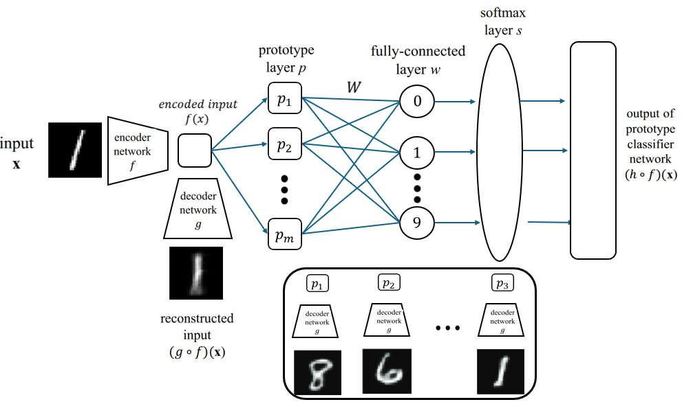

Improving Robustness of Prototype-Based DNNs
This project involves improving the robustness of Prototype-Based Deep Neural Networks against adversarial attacks....
I am a driven AI specialist with a strong foundation in Machine Learning, Natural Language Processing, and Explainable AI. I hold a Bachelor's degree in Artificial Intelligence from UPV/EHU and am currently pursuing an Advanced Master’s in AI at KU Leuven. Alongside my studies, I am completing an internship at Microsoft, where I contribute to impactful AI projects in a real-world setting. Known for my detail-oriented and innovative mindset, I am passionate about solving complex problems and translating cutting-edge research into practical solutions. Proficient in Python, R, and PyTorch, I thrive in collaborative, high-impact environments.

This project involves improving the robustness of Prototype-Based Deep Neural Networks against adversarial attacks....

This project analyzes Basque Parliament speeches using Natural Language Processing (NLP) techniques....

A Genetic Algorithm was used to solve the Traveling Salesman Problem by optimizing the travel route across cities....
Distributed data processing with Apache Spark to analyze NBA player movement and play-by-play data, extracting insights on speed, distance, and rebounds across 84 games.